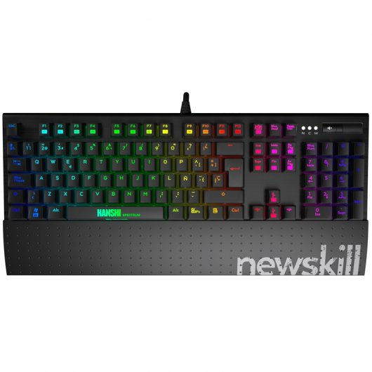

FUTURETECH STORE |
|  |
Newskill Hanshi Spectrum
89,99€
Te presentamos en PcComponentes lo último en periféricos Gaming de mano de la marca Newskill. Newskill nace gracias a la pasión por los e-sports, girando en todo momento en torno a la continua evolución y al perfeccionamiento de los usuarios, ya sean profesional o casual gamers. El objetivo de Newskill es proveer a los jugadores de los mejores productos de la escena gaming así como proporcionar el mejor soporte y experiencia de uso a cada uno de ellos. Bienvenidos jugadores!!!!
Teclado Mecánico RGBHANSHI Spectrum
Hanshi Spectrum es una versión mejorada de su predecesor Hanshi en donde hemos añadido a todos los detalles que hacen de este teclado un arma infalible para gamers (totalmente mecánico, grabación de macros, acabados metálicos…) la reinvención de la tecnología RGB. Además, con los mecanismos Red y Brown, hemos alargado su vida útil hasta 55 millones de pulsaciones, y mejorado la comodidad de uso con un reposa muñecas extraíble ergonómico.
Características
Totalmente personalizable Sabemos que no hay dos gamers iguales. Por eso el teclado Hansi spectrum es totalmente personalizable a todos los niveles: desde la grabación de macros, con la posibilidad de hacerlo ‘al vuelo’ (permitiendo una mayor rapidez y experiencia de juego), a la secuencia de colores de la tecla RGB, pudiendo personalizarla una a una o elegir entre los múltiples opciones pre-programadas.
Mimo en los pequeños detalles Hanshi Spectrum está realizado en cuerpo metálico de aluminio cepillado, testeado por nuestros gamers para aguantar todas las horas de juego que quieras dedicarle a los e-sports. Además dispone de reposa-muñecas extraíble, que proporciona al jugador la posibilidad de hacer el teclado más o menos compacto, según los gustos de cada gamer.
Máximo control de velocidad Gracias a sus mecanismos Brown y Red, podrás controlar la velocidad y el retroceso de cada tecla para tener la máxima sensibilidad y control de las pulsaciones. Mientras que el sistema Brown está pensados para jugadores que prefieren un retroceso mas rápido, ofreciendo mayor resistencia a la tecla, el Red tiene un recorrido de tecla más lento y un mecanismo de retroceso más suave.
Reinventando el RGB La versión Spectrum del teclado Hanshi cuenta con un sistema de retroiluminación RGB que puede ser configurado en color, intensidad, velocidad y posición tecla a tecla, o en cualquiera de los efectos preprogramados:
Spectrum color
Spectrum explosion
Single spectrum wave
Multi-spectrum wave
Key by Key color
Reactive color
Full anti-ghosting y modo N-Game El nuevo Spectrum dispone de tecnología antighosting, lo que permite que ninguna de las teclas que pulses sea ignorada. La función N-Game inutiliza la tecla Windows, activando el modo juego y las funciones macro para que estés centrado 100% en la partida.
Teclas multimedia y macro dedicadas Hanshi Spectrum dispone de grabación de teclas macro al vuelo, lo cual hace muy cómodo y rápido el uso de las combinaciones de comandos. También cuenta con diferentes teclas multimedia junto a un scroll y mute dedicados.
Especificaciones
Mecanismos Kailh RED o Brown (depende versión)
Battery Life: Vida util: Como mínimo, 55 millones de pulsaciones
Retroiluminación LED RGB con control de intensidad
25 modos de iluminación
Grabación de macros al vuelo
Reposa-muñecas removible
Modo de juego, desactivación de tecla windows y activación de perfiles macro
Conector USB chapado en oro
Cable de fibra trenzada de gran grosor
Tamaño aproximado: 441.6mm x 195mm x 37mm
Peso aproximado: 920g Teclado/ 170G reposa-muñecas
Requisitos del sistema: Windows XP/vista/7/8/10
Contenido del producto:
Teclado mecánico “HANSHI”.
Teclas Gaming intercambiables.
Herramienta para cambio de teclas.
Póster.
Colgador de puerta.
Tarjeta informativa.
Pegatina newskill.
Tarjeta exclusiva “VIP TEAM” de newskill con colgante.
|


{kind=link}
{kind=link}
{kind=link}
{kind=link}